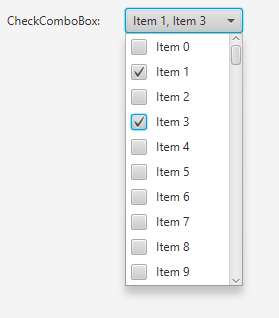
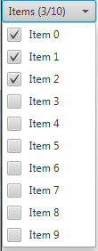

T - The type of the data in the ComboBox.@DefaultProperty(value="items")
public class CheckComboBox<T>
extends javafx.scene.control.Control
CheckBox, and the state
of each row can be queried via the check model.
titleProperty() property), with or without an indication of
how many items have been checked (see showCheckedCountProperty() property).
The following screenshot shows the CheckComboBox with some sample data:

The following screenshot shows the CheckComboBox with a fixed title and the
indication of how many items have been checked:

To create the CheckComboBox shown in the screenshot, simply do the following:
// create the data to show in the CheckComboBox
final ObservableList<String> strings = FXCollections.observableArrayList();
for (int i = 0; i <= 100; i++) {
strings.add("Item " + i);
}
// Create the CheckComboBox with the data
final CheckComboBox<String> checkComboBox = new CheckComboBox<String>(strings);
// and listen to the relevant events (e.g. when the selected indices or
// selected items change).
checkComboBox.getCheckModel().getCheckedItems().addListener(new ListChangeListener<String>() {
public void onChanged(ListChangeListener.Change<? extends String> c) {
while(c.next()) {
//do something with changes here
}
System.out.println(checkComboBox.getCheckModel().getCheckedItems());
}
});
}| Type | Property and Description |
|---|---|
javafx.beans.property.ObjectProperty<IndexedCheckModel<T>> |
checkModel
The check model provides the API through which it is possible
to check single or multiple items within a CheckComboBox, as well as inspect
which items have been checked by the user.
|
javafx.beans.property.ObjectProperty<javafx.util.StringConverter<T>> |
converter
A
StringConverter that, given an object of type T, will
return a String that can be used to represent the object visually. |
javafx.beans.property.BooleanProperty |
showCheckedCount
A boolean to decide if the information of how many items are checked
should be shown beside the fixed title.
|
javafx.beans.property.StringProperty |
title
The title to use for this control.
|
contextMenu, skinClassName, skin, tooltipbackground, border, cacheShape, centerShape, height, insets, maxHeight, maxWidth, minHeight, minWidth, opaqueInsets, padding, prefHeight, prefWidth, scaleShape, shape, snapToPixel, widthaccessibleHelp, accessibleRoleDescription, accessibleRole, accessibleText, blendMode, boundsInLocal, boundsInParent, cacheHint, cache, clip, cursor, depthTest, disabled, disable, effectiveNodeOrientation, effect, eventDispatcher, focused, focusTraversable, hover, id, impl_showMnemonics, impl_treeVisible, inputMethodRequests, layoutBounds, layoutX, layoutY, localToParentTransform, localToSceneTransform, managed, mouseTransparent, nodeOrientation, onContextMenuRequested, onDragDetected, onDragDone, onDragDropped, onDragEntered, onDragExited, onDragOver, onInputMethodTextChanged, onKeyPressed, onKeyReleased, onKeyTyped, onMouseClicked, onMouseDragEntered, onMouseDragExited, onMouseDragged, onMouseDragOver, onMouseDragReleased, onMouseEntered, onMouseExited, onMouseMoved, onMousePressed, onMouseReleased, onRotate, onRotationFinished, onRotationStarted, onScrollFinished, onScroll, onScrollStarted, onSwipeDown, onSwipeLeft, onSwipeRight, onSwipeUp, onTouchMoved, onTouchPressed, onTouchReleased, onTouchStationary, onZoomFinished, onZoom, onZoomStarted, opacity, parent, pickOnBounds, pressed, rotate, rotationAxis, scaleX, scaleY, scaleZ, scene, style, translateX, translateY, translateZ, visible| Constructor and Description |
|---|
CheckComboBox()
Creates a new CheckComboBox instance with an empty list of choices.
|
CheckComboBox(javafx.collections.ObservableList<T> items)
Creates a new CheckComboBox instance with the given items available as
choices.
|
| Modifier and Type | Method and Description |
|---|---|
javafx.beans.property.ObjectProperty<IndexedCheckModel<T>> |
checkModelProperty()
The check model provides the API through which it is possible
to check single or multiple items within a CheckComboBox, as well as inspect
which items have been checked by the user.
|
javafx.beans.property.ObjectProperty<javafx.util.StringConverter<T>> |
converterProperty()
A
StringConverter that, given an object of type T, will
return a String that can be used to represent the object visually. |
protected javafx.scene.control.Skin<?> |
createDefaultSkin() |
IndexedCheckModel<T> |
getCheckModel()
Returns the currently installed check model.
|
javafx.util.StringConverter<T> |
getConverter()
A
StringConverter that, given an object of type T, will
return a String that can be used to represent the object visually. |
javafx.beans.property.BooleanProperty |
getItemBooleanProperty(int index)
Returns the
BooleanProperty for a given item index in the
CheckComboBox. |
javafx.beans.property.BooleanProperty |
getItemBooleanProperty(T item)
Returns the
BooleanProperty for a given item in the
CheckComboBox. |
javafx.collections.ObservableList<T> |
getItems()
Represents the list of choices available to the user, from which they can
select zero or more items.
|
java.lang.String |
getTitle()
The title set for this control, if it has been set explicitly by the client.
|
protected java.lang.String |
getUserAgentStylesheet(java.lang.Class<?> clazz,
java.lang.String fileName)
A helper method that ensures that the resource based lookup of the user
agent stylesheet only happens once.
|
void |
hide()
Closes the popup / dialog that was shown when
show() was called. |
boolean |
isShowCheckedCount() |
void |
setCheckModel(IndexedCheckModel<T> value)
Sets the 'check model' to be used in the CheckComboBox - this is the
code that is responsible for representing the selected state of each
CheckBox - that is, whether each CheckBox is checked or
not (and not to be confused with the
selection model concept, which is used in the ComboBox control to
represent the selection state of each row).. |
void |
setConverter(javafx.util.StringConverter<T> value)
Sets the
StringConverter to be used in the control. |
void |
setShowCheckedCount(boolean value)
Sets the value to use to decide whether the checked items count should be
shown or not
|
void |
setTitle(java.lang.String value)
Sets the title to use.
|
void |
show()
Requests that the ComboBox display the popup aspect of the user interface.
|
javafx.beans.property.BooleanProperty |
showCheckedCountProperty()
A boolean to decide if the information of how many items are checked
should be shown beside the fixed title.
|
javafx.beans.property.StringProperty |
titleProperty()
The title to use for this control.
|
computeMaxHeight, computeMaxWidth, computeMinHeight, computeMinWidth, computePrefHeight, computePrefWidth, contextMenuProperty, executeAccessibleAction, getBaselineOffset, getClassCssMetaData, getContextMenu, getControlCssMetaData, getCssMetaData, getSkin, getTooltip, impl_cssGetFocusTraversableInitialValue, impl_processCSS, isResizable, layoutChildren, queryAccessibleAttribute, setContextMenu, setSkin, setTooltip, skinClassNameProperty, skinProperty, tooltipPropertybackgroundProperty, borderProperty, cacheShapeProperty, centerShapeProperty, getBackground, getBorder, getHeight, getInsets, getMaxHeight, getMaxWidth, getMinHeight, getMinWidth, getOpaqueInsets, getPadding, getPrefHeight, getPrefWidth, getShape, getUserAgentStylesheet, getWidth, heightProperty, impl_computeContains, impl_computeGeomBounds, impl_computeLayoutBounds, impl_createPeer, impl_notifyLayoutBoundsChanged, impl_pickNodeLocal, impl_updatePeer, insetsProperty, isCacheShape, isCenterShape, isScaleShape, isSnapToPixel, layoutInArea, layoutInArea, layoutInArea, layoutInArea, maxHeight, maxHeightProperty, maxWidth, maxWidthProperty, minHeight, minHeightProperty, minWidth, minWidthProperty, opaqueInsetsProperty, paddingProperty, positionInArea, positionInArea, prefHeight, prefHeightProperty, prefWidth, prefWidthProperty, resize, scaleShapeProperty, setBackground, setBorder, setCacheShape, setCenterShape, setHeight, setMaxHeight, setMaxSize, setMaxWidth, setMinHeight, setMinSize, setMinWidth, setOpaqueInsets, setPadding, setPrefHeight, setPrefSize, setPrefWidth, setScaleShape, setShape, setSnapToPixel, setWidth, shapeProperty, snappedBottomInset, snappedLeftInset, snappedRightInset, snappedTopInset, snapPosition, snapSize, snapSpace, snapToPixelProperty, widthPropertygetChildren, getChildrenUnmodifiable, getImpl_traversalEngine, getManagedChildren, getStylesheets, impl_getAllParentStylesheets, impl_processMXNode, impl_traversalEngineProperty, isNeedsLayout, layout, lookup, needsLayoutProperty, requestLayout, requestParentLayout, setImpl_traversalEngine, setNeedsLayout, updateBoundsaccessibleHelpProperty, accessibleRoleDescriptionProperty, accessibleRoleProperty, accessibleTextProperty, addEventFilter, addEventHandler, applyCss, autosize, blendModeProperty, boundsInLocalProperty, boundsInParentProperty, buildEventDispatchChain, cacheHintProperty, cacheProperty, clipProperty, computeAreaInScreen, contains, contains, containsBounds, cursorProperty, depthTestProperty, disabledProperty, disableProperty, effectiveNodeOrientationProperty, effectProperty, eventDispatcherProperty, fireEvent, focusedProperty, focusTraversableProperty, getAccessibleHelp, getAccessibleRole, getAccessibleRoleDescription, getAccessibleText, getBlendMode, getBoundsInLocal, getBoundsInParent, getCacheHint, getClip, getContentBias, getCursor, getDepthTest, getEffect, getEffectiveNodeOrientation, getEventDispatcher, getId, getInputMethodRequests, getLayoutBounds, getLayoutX, getLayoutY, getLocalToParentTransform, getLocalToSceneTransform, getNodeOrientation, getOnContextMenuRequested, getOnDragDetected, getOnDragDone, getOnDragDropped, getOnDragEntered, getOnDragExited, getOnDragOver, getOnInputMethodTextChanged, getOnKeyPressed, getOnKeyReleased, getOnKeyTyped, getOnMouseClicked, getOnMouseDragEntered, getOnMouseDragExited, getOnMouseDragged, getOnMouseDragOver, getOnMouseDragReleased, getOnMouseEntered, getOnMouseExited, getOnMouseMoved, getOnMousePressed, getOnMouseReleased, getOnRotate, getOnRotationFinished, getOnRotationStarted, getOnScroll, getOnScrollFinished, getOnScrollStarted, getOnSwipeDown, getOnSwipeLeft, getOnSwipeRight, getOnSwipeUp, getOnTouchMoved, getOnTouchPressed, getOnTouchReleased, getOnTouchStationary, getOnZoom, getOnZoomFinished, getOnZoomStarted, getOpacity, getParent, getProperties, getPseudoClassStates, getRotate, getRotationAxis, getScaleX, getScaleY, getScaleZ, getScene, getStyle, getStyleableParent, getStyleClass, getTransforms, getTranslateX, getTranslateY, getTranslateZ, getTypeSelector, getUserData, hasProperties, hoverProperty, idProperty, impl_clearDirty, impl_computeIntersects, impl_cssGetCursorInitialValue, impl_findStyles, impl_geomChanged, impl_getLeafTransform, impl_getMatchingStyles, impl_getPeer, impl_getPivotX, impl_getPivotY, impl_getPivotZ, impl_getStyleMap, impl_hasTransforms, impl_intersects, impl_intersectsBounds, impl_isDirty, impl_isDirtyEmpty, impl_isShowMnemonics, impl_isTreeVisible, impl_layoutBoundsChanged, impl_markDirty, impl_pickNode, impl_processCSS, impl_reapplyCSS, impl_setShowMnemonics, impl_setStyleMap, impl_showMnemonicsProperty, impl_syncPeer, impl_transformsChanged, impl_traverse, impl_treeVisibleProperty, inputMethodRequestsProperty, intersects, intersects, isCache, isDisable, isDisabled, isFocused, isFocusTraversable, isHover, isManaged, isMouseTransparent, isPickOnBounds, isPressed, isVisible, layoutBoundsProperty, layoutXProperty, layoutYProperty, localToParent, localToParent, localToParent, localToParent, localToParent, localToParentTransformProperty, localToScene, localToScene, localToScene, localToScene, localToScene, localToScene, localToScene, localToScene, localToScene, localToScene, localToSceneTransformProperty, localToScreen, localToScreen, localToScreen, localToScreen, localToScreen, lookupAll, managedProperty, mouseTransparentProperty, nodeOrientationProperty, notifyAccessibleAttributeChanged, onContextMenuRequestedProperty, onDragDetectedProperty, onDragDoneProperty, onDragDroppedProperty, onDragEnteredProperty, onDragExitedProperty, onDragOverProperty, onInputMethodTextChangedProperty, onKeyPressedProperty, onKeyReleasedProperty, onKeyTypedProperty, onMouseClickedProperty, onMouseDragEnteredProperty, onMouseDragExitedProperty, onMouseDraggedProperty, onMouseDragOverProperty, onMouseDragReleasedProperty, onMouseEnteredProperty, onMouseExitedProperty, onMouseMovedProperty, onMousePressedProperty, onMouseReleasedProperty, onRotateProperty, onRotationFinishedProperty, onRotationStartedProperty, onScrollFinishedProperty, onScrollProperty, onScrollStartedProperty, onSwipeDownProperty, onSwipeLeftProperty, onSwipeRightProperty, onSwipeUpProperty, onTouchMovedProperty, onTouchPressedProperty, onTouchReleasedProperty, onTouchStationaryProperty, onZoomFinishedProperty, onZoomProperty, onZoomStartedProperty, opacityProperty, parentProperty, parentToLocal, parentToLocal, parentToLocal, parentToLocal, parentToLocal, pickOnBoundsProperty, pressedProperty, pseudoClassStateChanged, relocate, removeEventFilter, removeEventHandler, requestFocus, resizeRelocate, rotateProperty, rotationAxisProperty, scaleXProperty, scaleYProperty, scaleZProperty, sceneProperty, sceneToLocal, sceneToLocal, sceneToLocal, sceneToLocal, sceneToLocal, sceneToLocal, sceneToLocal, sceneToLocal, screenToLocal, screenToLocal, screenToLocal, setAccessibleHelp, setAccessibleRole, setAccessibleRoleDescription, setAccessibleText, setBlendMode, setCache, setCacheHint, setClip, setCursor, setDepthTest, setDisable, setDisabled, setEffect, setEventDispatcher, setEventHandler, setFocused, setFocusTraversable, setHover, setId, setInputMethodRequests, setLayoutX, setLayoutY, setManaged, setMouseTransparent, setNodeOrientation, setOnContextMenuRequested, setOnDragDetected, setOnDragDone, setOnDragDropped, setOnDragEntered, setOnDragExited, setOnDragOver, setOnInputMethodTextChanged, setOnKeyPressed, setOnKeyReleased, setOnKeyTyped, setOnMouseClicked, setOnMouseDragEntered, setOnMouseDragExited, setOnMouseDragged, setOnMouseDragOver, setOnMouseDragReleased, setOnMouseEntered, setOnMouseExited, setOnMouseMoved, setOnMousePressed, setOnMouseReleased, setOnRotate, setOnRotationFinished, setOnRotationStarted, setOnScroll, setOnScrollFinished, setOnScrollStarted, setOnSwipeDown, setOnSwipeLeft, setOnSwipeRight, setOnSwipeUp, setOnTouchMoved, setOnTouchPressed, setOnTouchReleased, setOnTouchStationary, setOnZoom, setOnZoomFinished, setOnZoomStarted, setOpacity, setPickOnBounds, setPressed, setRotate, setRotationAxis, setScaleX, setScaleY, setScaleZ, setStyle, setTranslateX, setTranslateY, setTranslateZ, setUserData, setVisible, snapshot, snapshot, startDragAndDrop, startFullDrag, styleProperty, toBack, toFront, toString, translateXProperty, translateYProperty, translateZProperty, usesMirroring, visiblePropertypublic final javafx.beans.property.ObjectProperty<IndexedCheckModel<T>> checkModelProperty
public final javafx.beans.property.ObjectProperty<javafx.util.StringConverter<T>> converterProperty
StringConverter that, given an object of type T, will
return a String that can be used to represent the object visually.getConverter(),
setConverter(StringConverter)public final javafx.beans.property.StringProperty titleProperty
getTitle(),
setTitle(String)public final javafx.beans.property.BooleanProperty showCheckedCountProperty
titleProperty() has been set and this property is set to true
then a string like (3/10) would be shown when 3 items out of 10 are
checked.titleProperty()),
otherwise the title is constructed with a concatenation of the selected items.isShowCheckedCount(),
setShowCheckedCount(boolean)public CheckComboBox()
public CheckComboBox(javafx.collections.ObservableList<T> items)
items - The items to display within the CheckComboBox.public javafx.collections.ObservableList<T> getItems()
public javafx.beans.property.BooleanProperty getItemBooleanProperty(int index)
BooleanProperty for a given item index in the
CheckComboBox. This is useful if you want to bind to the property.public javafx.beans.property.BooleanProperty getItemBooleanProperty(T item)
BooleanProperty for a given item in the
CheckComboBox. This is useful if you want to bind to the property.public final void setCheckModel(IndexedCheckModel<T> value)
CheckBox - that is, whether each CheckBox is checked or
not (and not to be confused with the
selection model concept, which is used in the ComboBox control to
represent the selection state of each row)..public final IndexedCheckModel<T> getCheckModel()
public final javafx.beans.property.ObjectProperty<IndexedCheckModel<T>> checkModelProperty()
public final javafx.beans.property.ObjectProperty<javafx.util.StringConverter<T>> converterProperty()
StringConverter that, given an object of type T, will
return a String that can be used to represent the object visually.getConverter(),
setConverter(StringConverter)public final void setConverter(javafx.util.StringConverter<T> value)
StringConverter to be used in the control.value - A StringConverter that, given an object of type T, will
return a String that can be used to represent the object visually.public final javafx.util.StringConverter<T> getConverter()
StringConverter that, given an object of type T, will
return a String that can be used to represent the object visually.public final javafx.beans.property.StringProperty titleProperty()
getTitle(),
setTitle(String)public final void setTitle(java.lang.String value)
value - the string to use as titlepublic final java.lang.String getTitle()
public void show()
public void hide()
show() was called.protected javafx.scene.control.Skin<?> createDefaultSkin()
createDefaultSkin in class javafx.scene.control.Controlpublic final javafx.beans.property.BooleanProperty showCheckedCountProperty()
titleProperty() has been set and this property is set to true
then a string like (3/10) would be shown when 3 items out of 10 are
checked.titleProperty()),
otherwise the title is constructed with a concatenation of the selected items.isShowCheckedCount(),
setShowCheckedCount(boolean)public final void setShowCheckedCount(boolean value)
value - the value to setpublic final boolean isShowCheckedCount()
protected final java.lang.String getUserAgentStylesheet(java.lang.Class<?> clazz,
java.lang.String fileName)
clazz - the class used for the resource lookupfileName - the name of the user agent stylesheet